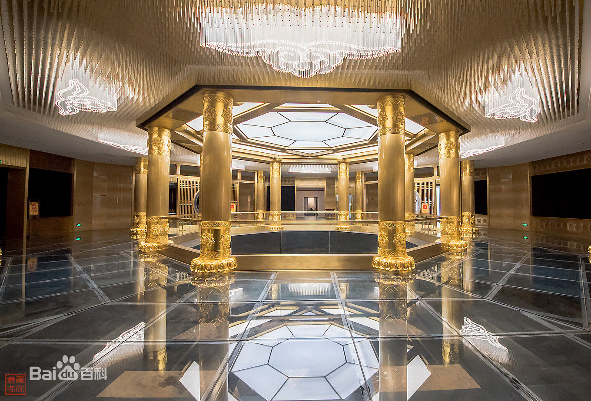
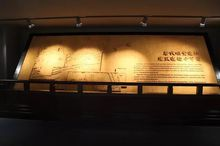
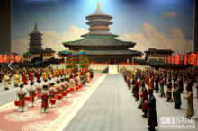
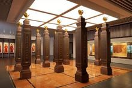
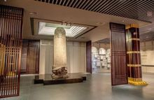
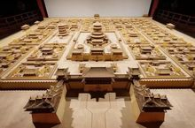

明堂，亦称天宫，是隋唐洛阳城中轴建筑群上著名的“七天建筑”中最高大的两个建筑之一，为武则天时期洛阳太初宫的外朝正衙主殿。明堂原为隋炀帝时所建的乾阳殿，后经四次被毁，四次修建，先后九次改名。唐睿宗垂拱三年（ 687 年）二月，武则天下诏拆除了正殿乾元殿，于其地造明堂，初号“万象神宫”。武则天万岁通天元年（ 696 年）三月，明堂被毁之后的第二年，重新建造的明堂重新落成，重建后曰“通天宫”。
据《资治通鉴》“唐纪”中记载，明堂共三层，底层为四方形，四面各施一色，分别代表春夏秋冬四季。中层十二面效法一天中十二个时辰。顶层为圆形，四周环绕九龙雕塑。中间有周长十五米左右的巨型木柱，上下通贯，故此又名为万象神宫。明堂是史上体量最大之木构建筑，基底正方90米X90米，高88.88米，唐代建筑技术之巅峰巨作。其建筑技术和施工技术惊世骇俗。
一天武则天有位贴身女官急匆匆地来到大殿，说有祥瑞表奏。原来，有人亲眼看见了有一只凤凰从明堂之上飞出，落在了上阳宫的肃政台的梧桐树上。武则天急忙率众登明堂观看，只见凤凰看到武则天后便向东南飞去，身后的朱雀却云集朝堂，翩然起舞久久不肯离去
看到此景，一个大臣立即跪倒在地，向武则天解释道：“凤凰象征的就是武后您，它飞到肃政台，见到您后才离开，就是在暗示您登基大宝；这些朱雀代表的正是臣下我们，您如果还是不登基，就是违背天意，朱雀们便不会离开，我们也将长跪不起呀！”看似万般无奈之下，武则天顺应天意，昭然登基，朱雀也果然飞走了。公元696年9月19日，武则天登上则天门，宣布开始登基大典，并下令大赦天下。
新明堂总共分为8个展示厅，主要展示明堂考古发掘、历代明堂规模、遗址全景浮雕等。
1986年考古发掘明堂基址，是六圈八边形的夯土台基，在明堂遗址中心为圆形的巨型大柱坑，坑口直径9.8米，逐层内收，坑底直径6.16米，深4.06米。坑底为四块大青石构成的巨型柱础，柱石外围由两圈刻度线，外圈直径4.17米，内圈3.87米。其中三方上面有圆形榫眼，在柱础石外侧有包砖呈八边形，外围是夯土。整个遗址坑有不同程度的残损和酥碱，经过专家们反复研究，采用轻钢架结构进行保护，基本上不改原柱坑的外观。
中心遗址大厅
 沿革厅
这里主要展示明堂考古发掘、历朝历代变迁模型，以及隋、唐、宋三个朝代宫城正殿的形制和沿革变化。武周时期，武则天以“自我作古，用适于事”建明堂，在形制，结构，规模的方面，将明堂这一古代重要的礼制建筑，推到了一个不可企及的巅峰高度。垂拱四年，（公元688年），武则天毁乾元殿，造明堂，高二百九十四尺，四面各宽三百尺，有上下三层，下层象时，各随方色;中层通贯。上为圆盖，有条九龙作捧著的姿态。上有铁凤，高一丈。饰以黄金，称为“万象神宫”。下层象四时，各随方色；中层法十二辰，圆盖，盖上盘九龙捧之；上层法二十四气，亦圆盖。”上层为圆顶亭子，上立高一丈的涂金铁凤，屋顶铺木胎夹纻漆瓦。明堂有上下贯通的巨木中桩，作为斗栱梁架依附的主干。明堂的规模和复杂程度超过唐两京所有宫殿，反映其设计与施工能力已接近或达到封建社会的最高水平。武则天时期，曾在此宴飨群臣，接受朝贺，发布政令。
大享厅位于明堂的西北侧，主要展示的是武周时期在明堂发生的一些重大事件。明堂即是武则天的布政之宫，也是敬神之所，是武则天皇权的象征。也展示武则天明堂受朝时微缩场景、明堂盟誓、武皇十万朝阅互动游戏体验，以及关于武则天电视剧、电影的视频资料播放区域
 大享厅
 政绩厅
公元690年，武则天称帝登基，极具政治才能的她总结唐太宗的经验和教训以及自己辅佐高宗20年的经验教训，比照前朝与当今，制出了施政大纲十二条，也就是我们面前所看到的——建言十二事，稳定了社会，造福了百姓，为后来一些执政者提供了很好的参考。武则天统治时期，武则天亲自主持考试，云集各地精英于洛阳，考生有上万人之多，连续考了数日。在他执政之后，又开设了武举。武则天在位的15年间，基本能维护了帝国的统一，疆域的辽阔，国家的强盛。这里的互动体验区，各位游客可以重返大唐，感受武周盛世的威严。
 文化厅
来到文化厅，我们首先看到的是这面装饰有二十个汉字的墙壁—武皇造字，作为历史上唯一一位正统女皇帝，她在文字上大胆改革，增减前人笔画，从其独创却广为使用的二十个汉字中，不难窥见其才气与非凡智慧！其中日月当空这个字念zhao，是武则天当初为自己起名字所用，因为日月当空普照大地，所以叫曌。升仙太子碑历经1300余年风雨沧桑，依然矗立于河南省偃师市府店镇南缑山之巅，武周圣历二年（公元699年）二月初四，武则天由洛阳赴嵩山封禅，返回时留宿于缑山升仙太子庙，一时触景生情而撰写碑文，并亲为书丹。
明堂城建厅展示明堂中心柱遗迹巨木十围、浩瀚星空，武则天宫城区沙盘模型及《武周之治》视频。在这里， 我们虚拟设计了通天柱的剖面装置，其柱体是有多层巨木包裹围合而成，以榫木连接，铁箍围合。以此来展示当年气势恢宏的通天柱，让我们再次领略盛唐的奢华。
 城建厅
隋唐洛阳城遗址，被国家文物局列为“十一五”国家重大文化遗产地及大遗址综合保护与科技示范区，同时被列入丝绸之路申遗名单。武周明堂遗址位于隋唐洛阳城遗址核心区内的中轴线上，以隋唐洛阳城遗址“一区一轴”的规划为基础，传扬洛阳武周明堂大遗址的保护理念，整体性地展示和宣传隋唐洛阳城宫城的文化价值。这个L型的展示屏所展示的正是从古至今的发展历程。
按展厅自由分配
08:30-16:30
洛阳公交车的首末时间通常为5:30—21：00，价格有1元和1.5元，买票方式：投币，刷卡。 市内有4、5、6、8、9、18、21、26、41、48、49、56、59、65、81、86、101到中州中路与定鼎路交叉口 下车即到景区南门。